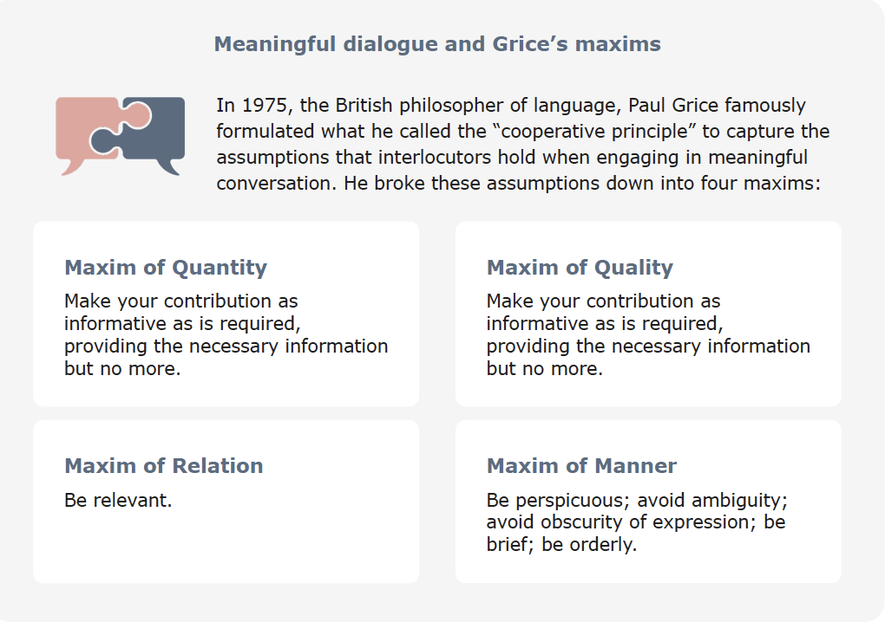

Stakeholder Impact Assessment¶
Designers and users of AI systems should remain aware that these technologies may have transformative and long-term effects on individuals and society. To ensure that the deployment of an AI system remains sustainable and supports the sustainability of the communities it will affect, the project team should proceed with a continuous sensitivity to the real-world impacts that the system will have. The team should come together to evaluate the social impact and sustainability of an AI project through what is known as a Stakeholder Impact Assessment (SIA).
The SUM values form the basis of the SIA. They are intended as a launching point for open and inclusive conversations about the individual and societal impacts of data science research and AI innovation projects rather than to provide a comprehensive inventory of moral concerns and solutions. At the very outset of any project, these should provide the normative point of departure for collaborative and anticipatory reflection, while, at the same time, allowing for the respectful and interculturally sensitive inclusion of other points of view.
Objectives of a SIA
The purpose of carrying out a SIA is multidimensional. SIAs can serve several purposes, some of which include:
- Help to build public confidence that the design and deployment of the AI system has been done responsibly.
- Facilitate and strengthen your accountability framework.
- Bring to light unseen risks that threaten to affect individuals and the public good.
- Underwrite well-informed decision-making and transparent innovation practices.
- Demonstrate forethought and due diligence not only within an organisation but also to the wider public.
AI projects may require different kinds of impact assessments. For example Data Protection Law requires data protection impact assessments (DPIAs) to be carried out in cases where the processing of personal data is likely to result in a high risk to individuals. DPIAs assess the necessity and proportionality of the processing of personal data, identify risks that may emerge in that processing, and present measures taken to mitigate those risks. Another example are equality impact assessments (EIAs) which aid in fulfiling the requirements of equality legislation.
While both DPIAs and EIAs provide relevant insights with respect to the ethical stakes of AI innovation projects, they go only part of the way in identifying and assessing the full range of potential individual and societal impacts of the design, development, and deployment of AI systems. Reaching a comprehensive assessment of these impacts is the purpose of SIAs.
Key Concept: Stakeholder Impact Assessment
SIAs are tools that create a procedure for, and a means of documenting, the collaborative evaluation and reflective anticipation of the possible harms and benefits of AI innovation projects. SIAs are not intended to replace DPIAs or EIAs, which are obligatory. Rather, SIAs are meant to be integrated into the wider impact assessment regime as a way to demonstrate that sufficient attention has been paid to the ethical permissibility, transparency, accountability, and equity of AI innovation projects.
There are three critical points in the AI project lifecycle at which the project team should convene to impact the social impact and sustainability of a project:
=== ":octicons-log-16: Design"
A SIA should be carried out to determine the ethical permissibility of the project. As a starting point, the team should refer to the SUM Values for the considerations of the possible effects of the project on individual wellbeing and public welfare. This should include a stakeholder engagement and involvement component in the initial SIA through methods established in the initial Project Summary Report (PS Report), so public views can be considered in ways that are proportional to potential project impacts and appropriate to team positionality.
This will bolster the inclusion of a diversity of voices and opinions into the design and development process through the participation of a more representative range of stakeholders. The Design Phase SIA includes a revisitation of the Project Summary Report, where engagement objectives and methods for the Development Phase SIA were first established. These, and other relevant project revisions should be reflected in an update to the PS Report.
=== ":material-developer-board: Develop"
Once a model has been trained, tested, and validated, the project team should revisit the initial SIA to confirm that the AI system to be implemented is still in line with the evaluations and conclusions of the original assessment. This check-in should be logged on the Development Phase section of the SIA with any applicable changes added and discussed.
The method of stakeholder engagement that accompanies the SIA process will have been initially established in the PS report and revisited in the Design Phase SIA. This report should be revisited again during the Development Phase SIA and updated where needed. At this point the team must also set a timeframe for re-assessment once the system is in operation. Timeframes for these re-assessments should be decided by the team on a case-by-case basis but should be proportional to the scale of the potential impact of the system on the individuals and communities it will affect.
=== ":material-network-pos: Deploy"
Once an AI system has gone live, the team should iteratively revisit and re-evaluate the SIA. These checkins should be logged on the Deployment Phase section of the SIA with any applicable changes added and discussed. Deployment-Phase SIAs should focus both on evaluating the existing SIA against real world impacts and on considering how to mitigate the unintended consequences that may have ensued in the wake of the deployment of the system. As with each SIA iteration, the PS report is revisited at this point, when objectives, methods, and timeframes for the next Deployment Phase SIA are established.
Skills for Conducting SIA's¶
Weighing the values and considering trade-offs¶
Taking the SUM values as a starting point of conversation and for the SIA, there will come times when these values come into conflict with one another and decisions will have to be made on which value to prioritise. Within a team, discussion should be encouraged on how to weigh the values against one another and how to consider trade-offs should use-case specific circumstances arise when the values come into tension with each other.
For instance, there may be circumstances where the use of an AI system could optimally advance the public interest only at the cost of safeguarding the wellbeing or the autonomy of a given individual. In other cases, the use of an AI system could preserve the wellbeing of a particular individual only at the cost of the autonomy of another or of the public welfare more generally.
This issue of adjudicating between conflicting values has long been a crucial and thorny dimension of collective life, and the problem of discovering reasonable ways to overcome the disagreements that arise as a result of the plurality of human values has occupied thinkers for just as long. Nonetheless, over the course of the development of modern democratic and plural societies, several useful approaches to managing the tension between conflicting values have emerged.
Consequences-based and principles-based approaches to balancing values¶
Let's go back to some concepts introduced in chapter 1 that will be useful when trying to balance the tension between values: consequences-based moral thinking or consequentialism and principles-based moral thinking or deontology. These can be seen as procedural tools for thinking through a given dilemma in weighing values.
As a quick reminder, a consequence-based approach asks that, in judging the moral correctness of an action, one prioritise considerations of the goodness produced by an outcome. In other words, because what matters most is the consequences of ones actions, the goodness of these consequences should be maximised. Standards of right and wrong (indicators of what one ought to do) are determined, on this view, by whether the action taken maximises overall goodness of the consequences rather than by the principles or standards one applies when acting.
A principles-based approach takes the opposite tack. The rightness of an action is determined, from this standpoint, by the intentional application of a universally applicable standard, maxim, or principle. Rather than basing the morality of conduct on the ends served by it, this approach anchors rightness in the duty or obligation of the individual agent to follow a rationally determined (and therefore “universalisable”) principle.
For deontological or principles-based ethics, the integrity of the principled action and intention matters most, and so justified constraints, which are rooted in the priority to act according to moral standards, must be put on the pursuit of the achievement of one’s goals.
Knowing when to prioritise consequences and when to prioritise principles in moral deliberations is a tricky matter, and applying either a consequentialist or deontological approach (or both) may make sense depending upon the context.
To take a familiar example, in deontologically following the principle ‘Thou shall not lie,’ you would be justifiably constrained from stealthily deceiving and misleading others to get ahead in your job. The principle matters here. But, in a different situation, say, where lying to a murderer, who appears at your front door, would save an innocent victim whom you are concealing in your cellar, the prioritisation of consequences makes more sense.
Consider another example: In an overburdened council, the introduction of an automated system for making sites available for development would vastly expedite housing delivery. The implementation of this AI system would thus produce a consequence that could be beneficial to the public.
Yet, it may, among other things, simultaneously do damage to the value of Connect (which safeguards interpersonal dialogue, meaningful human connection and social cohesion) by eliminating time intensive consultation processes that facilitate interpersonal communication, trust building, and social bonding between council staff and residents. How then could one go about weighing the value of improving public welfare against the value of respecting the integrity of interpersonal relations?
One way would be to place each side of this comparison under the rubric of either consequences or principles and then measure them up against each other accordingly. From one perspective, the publicly beneficial consequences of improving service delivery might outweigh the publicly harmful consequences of impairing social cohesion. On a different view, such a trade-off would be unacceptable, because the principle of respecting the integrity of social cohesion trumps any solidarity-harming but publicly beneficial consequences whatsoever. The answers to these questions will always be tricky, but deliberation between team members and stakeholders should always be a part of arriving to any sort of consensus (which we will focus on in the next section).
Getting clear on the consequences and the principles involved in a specific case of conflicting values will allow team members to get a better picture of the practical and moral stakes at play in a particular project. It will also help the team get a sharper idea of the proportionality of using an AI technology to achieve a desired outcome given both its potential ethical impacts and the social needs to which it is responding. When drawn upon for guidance, consequentialism and deontology can provide a kind of procedural scale upon which to place, measure, and weigh conflicting values. They are practical tools that can be used within meaningful deliberation.
Ensuring meaningful and inclusive deliberation¶
The most general approach is to encourage mutually respectful, sincere, and well-informed dialogue, so that reasons from all affected voices can be heard and considered. Deliberations that have been inclusive, open, and impartial tend to generate better and more inferentially sound conclusions, so approaching the adjudication of conflicting values in this manner will likely improve mutual understanding of the rationales and perspectives, which inform those values.
Whether or not this ends up being the case in each conversational context, the importance of cultivating a culture of innovation, which encourages reciprocally respectful, open, non-coercive, and mutually accountable communication must be stressed. The success of the modern sciences (which have been built on the dynamic foundations of inclusive, rational, and democratic communication) is perhaps evidence enough to support the validity of this emphasis.

Here, procedural ethics is crucial. The importance of meaningful dialogue in balancing values is rooted in central role played in it by the rational exchange and assessment of ideas and beliefs. The validity of the claims we make in conversations about values is bound by practices of giving and asking for reasons. A claim about values that is justified is one that convinces by the unforced strength of the better or more compelling argument. Rational justification and persuasive reason-giving are, in fact, central elements of legitimate and consensus-oriented moral decision making. And, along the same lines, claims made about moral values or properties are subject to critical evaluation vis-à-vis their inferential strengths and weaknesses.
Another way to understand the importance of meaningful dialogue in balancing values has to do with the way that such a procedural view of ethical thinking enables open communication about prioritising values without imposing substantive views about the values themselves. Instead, an emphasis on rational communication in deliberations looks to secure a justified and equitable process of exchanging and evaluating reasons. It starts with the question: what are the enabling conditions in the interpersonal communication of values and beliefs that allow interlocutors to come to defensible and rationally acceptable moral judgments and reason-based consensus?
To answer this question, moral thinkers over the past century have endeavoured to reconstruct the practical assumptions behind and presuppositions of rational communication (a summary of the most essential of such assumptions and presuppositions is provided below). Creating a reflective and practicable awareness of these assumptions and presuppositions among members of a team can play a crucial role in creating an innovation environment that is optimally conducive meaningful and inclusive deliberation.
Preconditions of meaningful deliberation:
Impartiality
Interlocutors engaging in meaningful deliberation must consider the interests of all those who are affected by their actions equally. Thinking impartially involves taking on the view of others to try to put oneself in their place.
Non-coercion
Meaningful deliberation must be free from any sort of implicit or explicit coercion, force, or restriction that would prevent the open and unconstrained exchange of reasons.
Sincerity
Meaningful deliberation must be free from any sort of deception or duplicity that would prevent the authentic exchange of reasons. Interlocutors must mean what they say.
Consistency and coherence
Arguments and positions offered in meaningful deliberation must be clear, free from contradictions, and hold together collectively in an understandable way.
Mutual respect and egalitarian reciprocity
All interlocutors must be treated with respect and given equal opportunity to contribute to the conversation. All voices are worthy of equal consideration in processes of exchanging reasons.
Inclusivity and publicity
Anyone whose interests are affected by an issue and who could make a contribution to better understanding it must not be excluded from participating in deliberation. All relevant voices must be heard and all relevant information considered.
Addressing and mitigating power dynamics that may obstruct meaningful and inclusive deliberation¶
The stewardship of meaningful and inclusive dialogue is critical to safeguarding the collective weighing up of values. However, there is an important potential barrier to meaningful deliberation that challenges its feasibility and must be addressed. As guiding assumptions of rational communication, norms like sincerity, impartiality, non-coercion, and inclusiveness may strike some as overly idealistic. In the real world, discussions are rarely fully inclusive, informed, and free of assertive manipulation, coercion, and deception. Rather, deliberation and dialogue are often steered by and crafted to protect the interests of the dominant. Likewise, differential power relationships (for instance, divergent educational backgrounds that derive from differential socioeconomic privileges) create power imbalances that fundamentally challenge the conditions of reciprocity and equal footing that are needed for justified and equitable communication.
A team should confront these obstacles to meaningful deliberation head-on through a power-aware approach to facilitating collaborative reflection, dialogue, and engagement. An awareness of and sensitivity to the differential relationships of power that can suppress the full participation of disadvantaged or marginalised voices can better encourage an inclusive, open, and equal opportunity conversation between participants.
Clear-headed explorations of power dynamics between civil servants, scientists, citizens, domain experts, and policymakers can assist in avoiding the kind of deficiencies of representation and empowerment that risk reinforcing existing power structures and inequalities. This may involve active mitigation measures like the provision of training, upskilling, and technical resources to those who have lacked access to them. Above all, the norms of meaningful deliberation makes teams aware of the possible distortions of communication (i.e. a lack of egalitarian reciprocity, non-coercion, sincerity, etc.) that must be tackled and rectified for the hurdles of power disparities to be scaled.